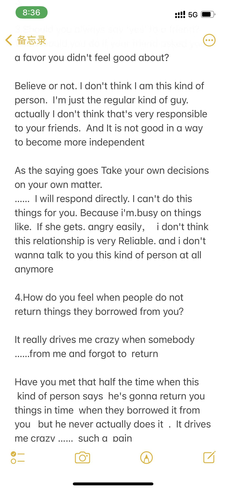
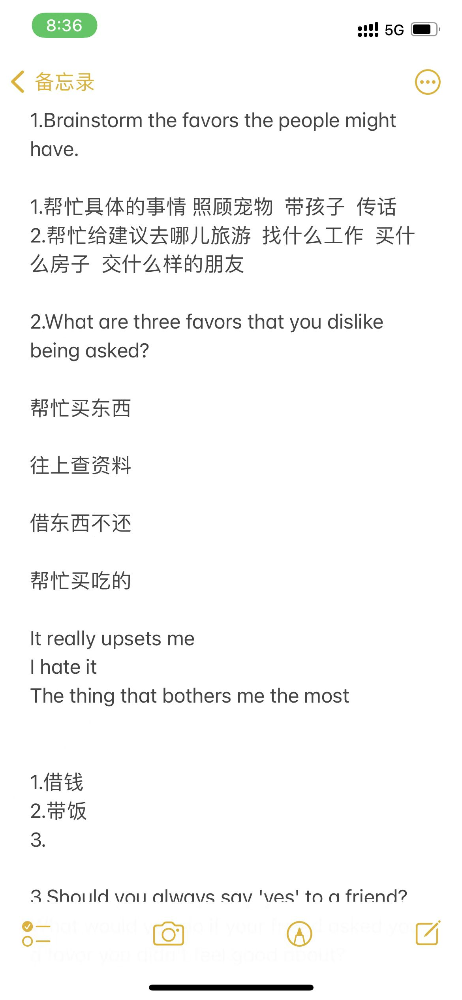

1.The favors the people might have.
思考的角度：
思考的角度：具体的事情：带个饭什么的 照顾宠物。关于suggestion。重要的事情，别人会询问建议 假期到哪旅游，工作，房子，去哪玩，找什么性格的朋友，
参考句型：
I was wondering if you could look after my pet ?
Give the message to somebody
where she could go
Pre:
Someone will ask you to borrow something ,lend something ,figure out something difficult for us .
When we are in a new place we hadn’t arrived before ,we need someone to ask for directions.
When we cannot figure out something difficult for a long time ,maybe a math or physics problem, we need someone to give us some tips .
When we need money urgently , we need someone who could lend us money.
When we forget to take our stationery ,such as pens rulers erasers and so on ,we could ask someone for help .
When we’re emotional ,we could find someone to talk to ,after that ,maybe we’re going to be relieved .
2.What are three favors that you dislike being asked?
思考的角度：
买东西，查资料， 违背道德与法律的事因为别人的懒惰而要求的帮忙不会去帮，借东西不还的， 会让你产生情绪，厌倦，学会表达主观情绪
参考句型：
bring food .
download something I have absolutely no need for
I hate it when someone ask me to buy something to eat .
I hate it when someone …………
I let me down (upset)
It drivers me crazy when
You know I really hate one of those guys ,
Pre:
I wouldn’t like someone to ask me for money because I’m really poor .
I wouldn’t like someone to ask me for directions because I have a bad sense of direction.
I wouldn’t like someone to ask me for emotional advice between boy and girl ,because I truly need a hand too !
3.Should you always say 'yes' to a friend?
What would you do if your friend asked you a favor you didn't feel good about?
思考的角度：
如果我不帮她没有人会帮 首先要正面回答这个问题， ,我不帮的话，我会把话讲明，解释自己的难处，我也像帮忙，但是其他人会做的更好，看你自己是个什么样的人 拒绝别人会很难受，给出具体的小的解释，如果他会容易生气，我不想和他交往，给出自己具体的 可以举一个例子，
参考句型：
Take care of yourself at first ,then you could have the power to help others
I always say yes
I don’t think I’m one of this kind of people
As for me ,as the saying goes ,you know what I mean yeah ?
Pre：
It depends on the situation ,if a friend in great need asks me for help ,I will lend a hand immediately and do what I can do , no matter how difficult the things they’re facing .
Because we’re brothers ,their problems are my problems .
To help others is to help ourselves, for the good we do will be returned to us.
I will lend a hand if the thing is helpful for them .
As the old saying says :” If a person only thinks of himself ,then in his life ,sad things must be more than the happy things .”
Conversely ,if I offer a hand ,I will get something cheerful and satisfied, even if the favor was what I didn’t feel good about .
4. How do you feel when people do not return things they borrowed from you？
思考的角度：
很久不还东西，当我急用的时候才发现自己已经借出去了。 表达自己的情绪，可以使用一些更加高级的表达.freetalk自述高阶版 可以写下来，语言是重复出来的，
参考句型：
It drives me crazy ,
I don’t want to make friends with such a person
he’s such a pain !
Pre:
I will feel not good ,no matter who they’re ,friends or strangers .
In my opinion, it’s necessary for us to return things we borrowed from someone in time .
On the one hand ,these things didn’t belong to us ,they’re others’ property . We have no power to take them for ourselves .
On the other hand , it indicates that other people think us dependable if they lent us something ,and we should not play with their trust in us .
What’s more , it will drives me crazy if I can’t find something when I need it urgently just because someone have borrowed it and haven’t returned it to me in time .
When was the last time you owed someone an apology?
Pre:
The last time I owed someone an apology was in the junior year in high school after I had a big quarrel with my best friend Wu .
That was in the evening after we have a supper together .
As we were walking to the classroom for the free period ,
we made jokes with each other .
But suddenly his face changed greatly , and he blamed me for what I said . he thought it inappropriate .
But I didn’t think so ,from my perspective ,it’s not a big deal.
So we had a big fight and didn’t take the initiative to find each other at all.
In retrospect, if I had offered to apologize, I might not have lost a friend .
What a pity !
Something Else

